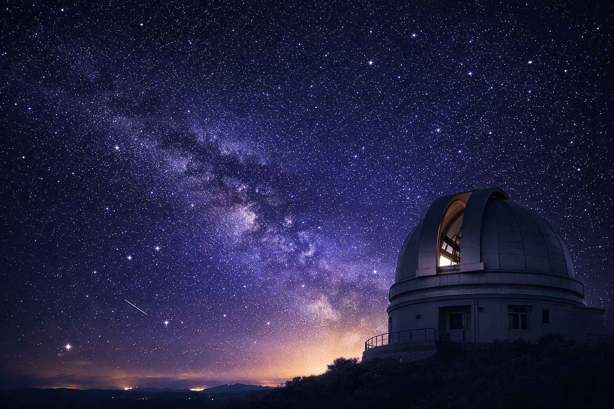

The Midnight Observatory is a quiet and inspiring place where astronomers study the mysteries of the universe. Every clear night, the dome opens and the telescope points toward distant stars, planets, and galaxies.
Researchers use advanced instruments to observe the sky and collect valuable data about space. Visitors are often amazed by the beauty of the Milky Way, the movement of constellations, and the peaceful atmosphere of the observatory.
From meteor showers to lunar observations, the Midnight Observatory connects science and wonder in one unforgettable experience. It is a place where curiosity grows and the universe feels a little closer.